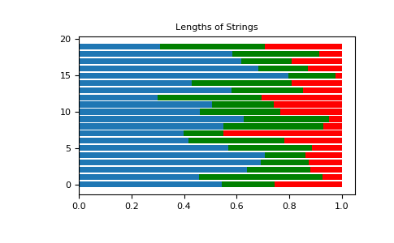

numpy.random.Generator.dirichlet¶
method
-
Generator.dirichlet(alpha, size=None)¶ Draw samples from the Dirichlet distribution.
Draw size samples of dimension k from a Dirichlet distribution. A Dirichlet-distributed random variable can be seen as a multivariate generalization of a Beta distribution. The Dirichlet distribution is a conjugate prior of a multinomial distribution in Bayesian inference.
Parameters: - alpha : array
Parameter of the distribution (k dimension for sample of dimension k).
- size : int or tuple of ints, optional
Output shape. If the given shape is, e.g.,
(m, n, k), thenm * n * ksamples are drawn. Default is None, in which case a single value is returned.
Returns: - samples : ndarray,
The drawn samples, of shape (size, alpha.ndim).
Raises: - ValueError
If any value in alpha is less than or equal to zero
Notes
The Dirichlet distribution is a distribution over vectors that fulfil the conditions and .
The probability density function of a Dirichlet-distributed random vector
 is
proportional to
is
proportional to
where is a vector containing the positive concentration parameters.
The method uses the following property for computation: let
 be a random vector which has components that follow a standard gamma
distribution, then
be a random vector which has components that follow a standard gamma
distribution, then  is Dirichlet-distributed
is Dirichlet-distributedReferences
[1] David McKay, “Information Theory, Inference and Learning Algorithms,” chapter 23, http://www.inference.org.uk/mackay/itila/ [2] Wikipedia, “Dirichlet distribution”, https://en.wikipedia.org/wiki/Dirichlet_distribution Examples
Taking an example cited in Wikipedia, this distribution can be used if one wanted to cut strings (each of initial length 1.0) into K pieces with different lengths, where each piece had, on average, a designated average length, but allowing some variation in the relative sizes of the pieces.
>>> s = np.random.default_rng().dirichlet((10, 5, 3), 20).transpose()
>>> import matplotlib.pyplot as plt >>> plt.barh(range(20), s[0]) >>> plt.barh(range(20), s[1], left=s[0], color='g') >>> plt.barh(range(20), s[2], left=s[0]+s[1], color='r') >>> plt.title("Lengths of Strings")
